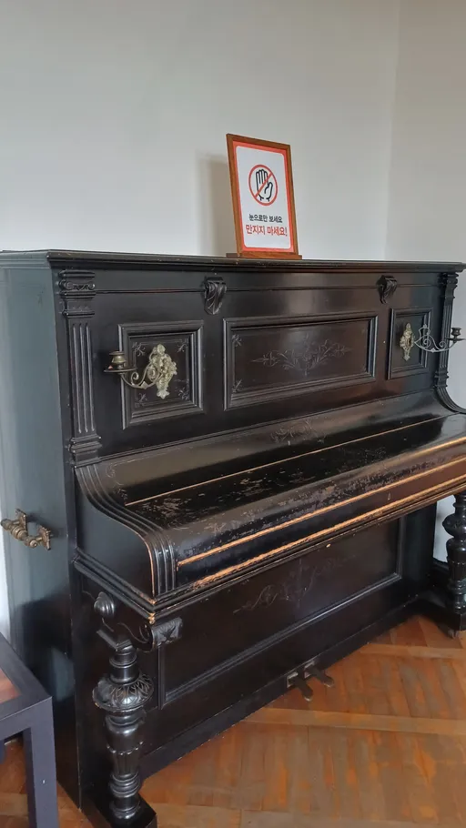
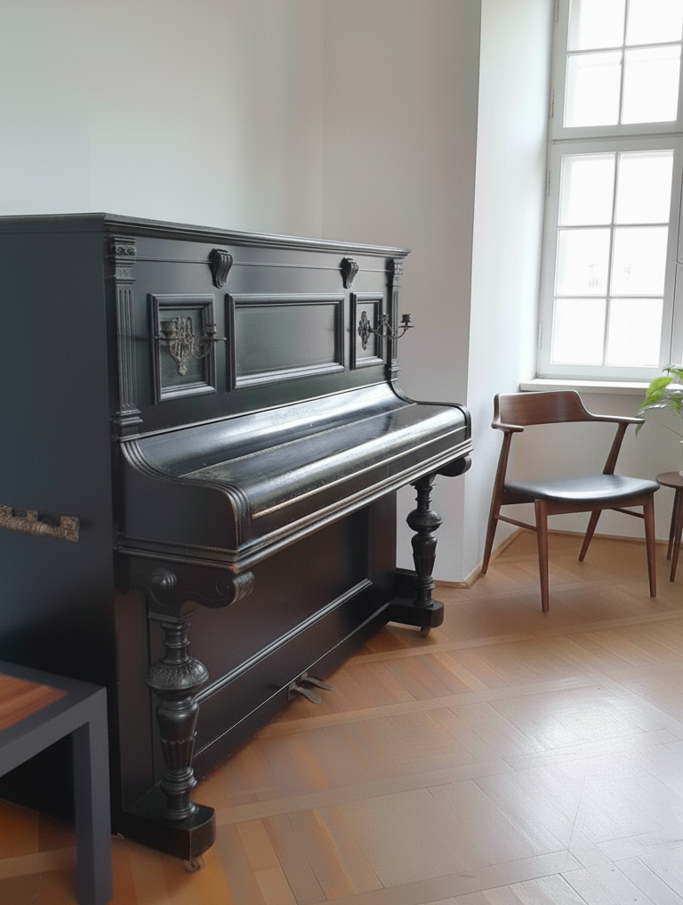
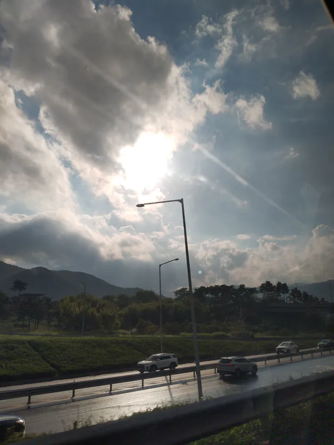
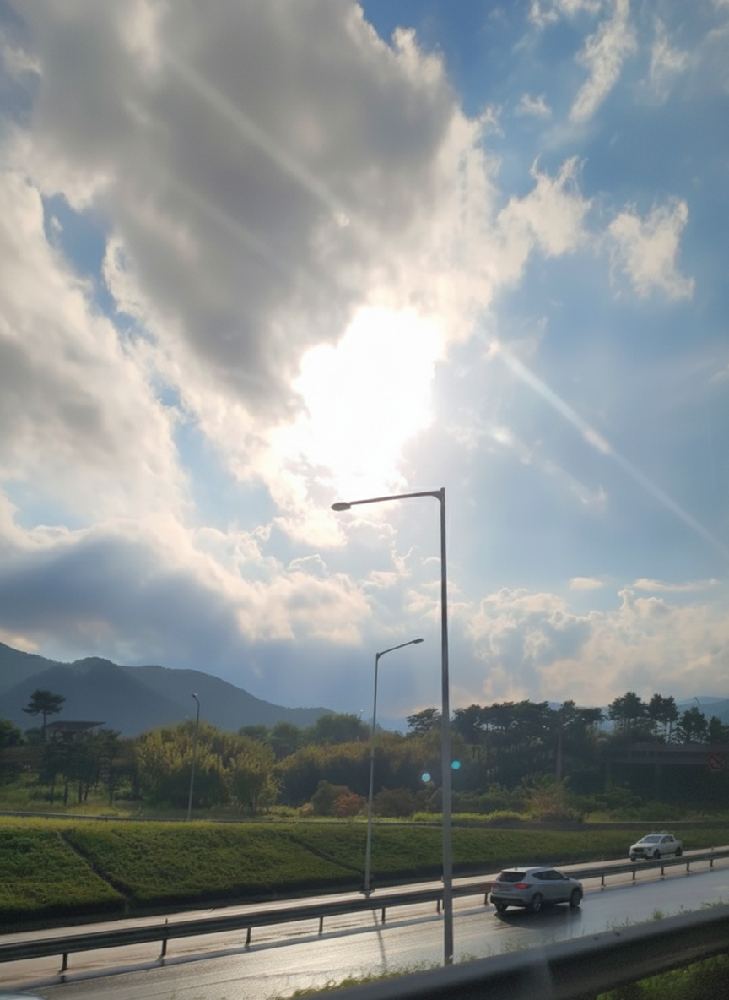
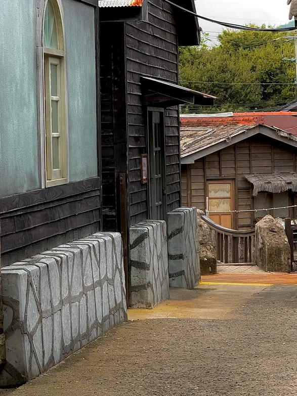
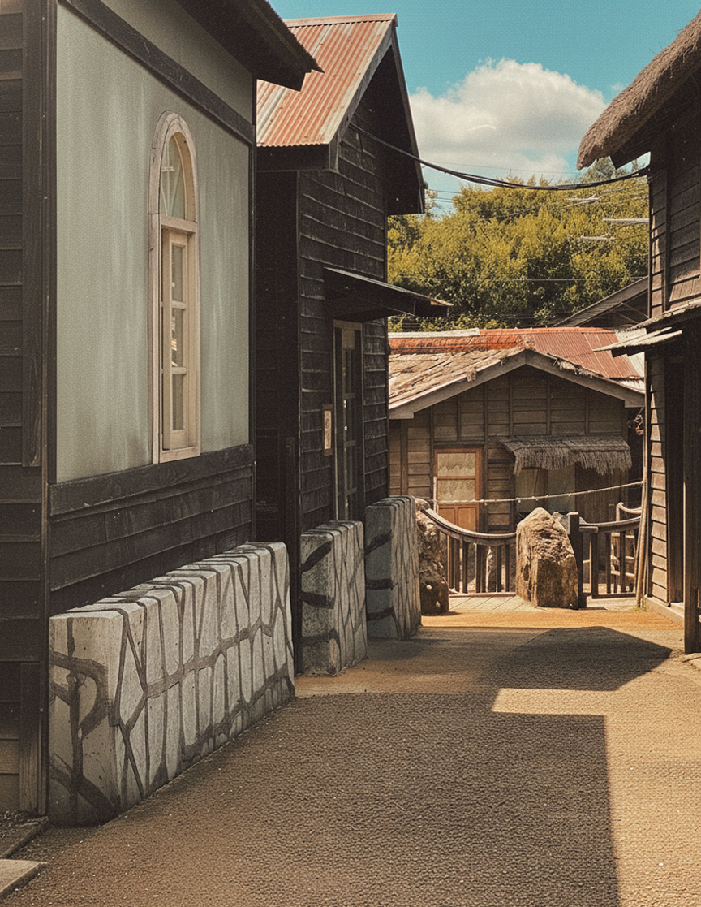
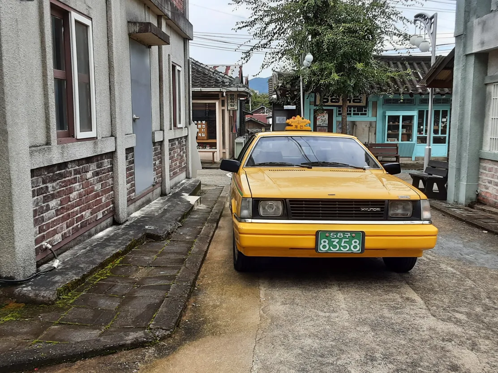
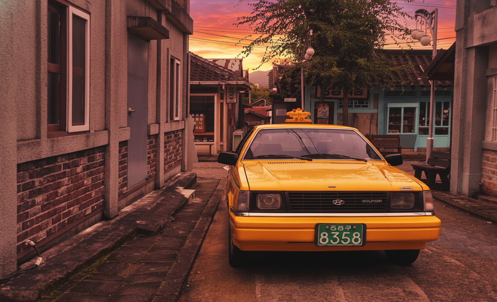

드라마세트장의 피아노
김서하
피아노 주변의 배경을 생성형 AI를 이용해 확장하고 분위기를 더했습니다.
원본
수정본
차에서 바라본 풍경
정지혜
차창 밖의 흐릿한 풍경을 AI로 재구성하여 선명한 색감을 가진 풍경으로 바꾸었습니다.
원본
수정본
구름 위의 하늘
차예주
비행기 날개만 보이던 사진에 AI를 활용하여 동화 같은 구름과 하늘 배경을 추가했습니다.
원본
수정본
드라마세트장의 거리
최서연
드라마세트장의 거리 모습을 AI로 편집하여 구도를 맞추고 영화와 같은 색감으로 조정하였습니다.
원본
수정본
옛날 택시
이효준
드라마세트장에 놓여 있는 옛 택시의 모습을 촬영한 후 해질녘으로 배경을 바꾸어 보았습니다.
원본
수정본
